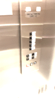

I chose the elevator at The Carlton House for my presentation. The elevator's control interface was nice to the eyes and had a straighforward design. The only modification I would make on the elevator's control interface would be to swap the alarm and phone buttons with the open and close door buttons. I modeled my touch screen elevator control interface after the carlton's elevator control interface because I really liked their design and I wanted my control interface to simulate interacting with a elevator that has physical buttons.
When a floor button(1-5) is pressed, the corresponding buttons light will turn off and it will turn back on and beep when the floor is reached. The four bottom buttons light's never turn off and each make a beep immediately after they are pressed. There is also a floor tracker at the top of the interface so that the user always knows what floor they are on.
Click here to watch the interface in action